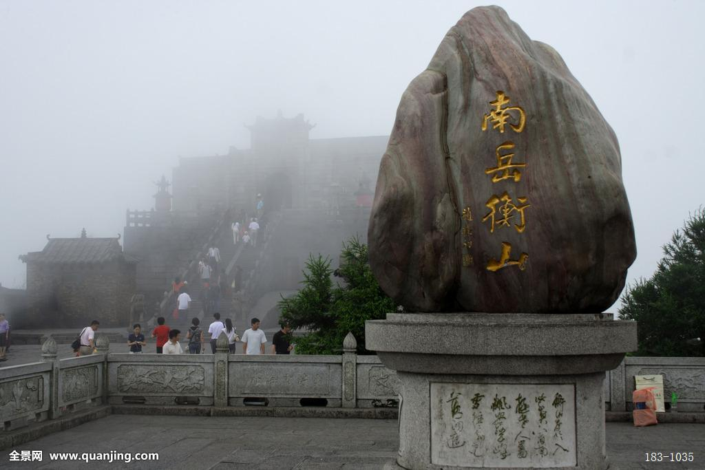
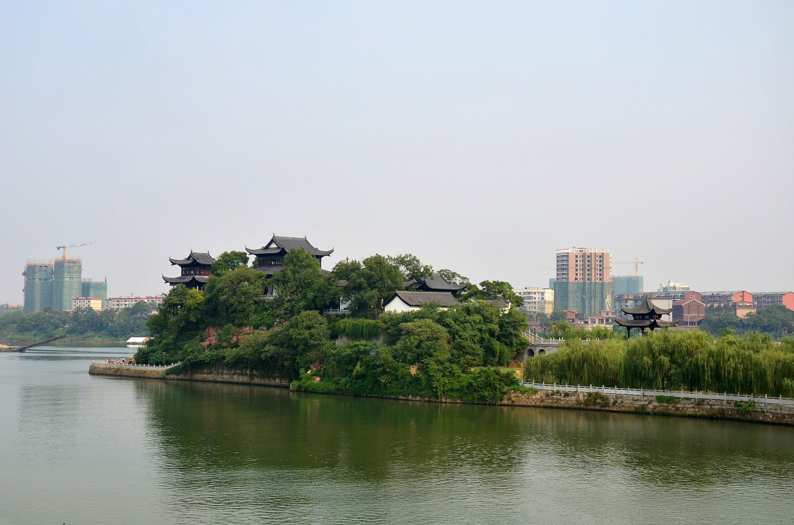
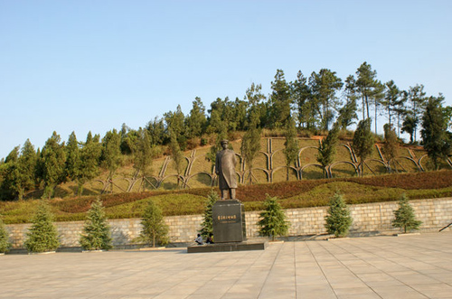
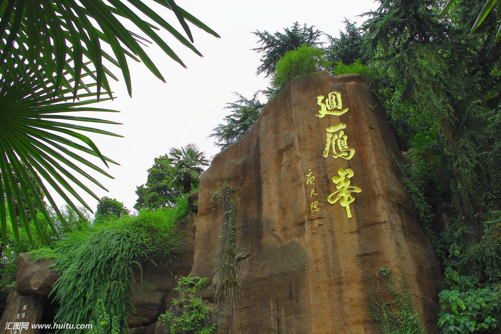

雁城——衡阳

南岳衡山
衡山（Mount Heng），又名南岳、寿岳、南山，为中国“五岳”之一，衡山的命名，据战国时期《甘石星经》记载，因其位于星座二十八宿的轸星之翼，犹如衡器，可称天地，故名衡山。衡山是中国著名的道教、佛教圣地，环山有寺、庙、庵、观200多处。其最高峰祝融峰海拔1300.2米。2006年2月，衡山入选首批国家自然与文化双遗产名录；2007年5月，衡山风景区被评为首批国家5A级旅游景区。

石鼓书院
石鼓书院（Shigu Academy），位于湖南省中南重要城市衡阳市石鼓区石鼓山，是湖湘文化发源地和湖南第一胜地，始建于唐元和五年（公元810年），迄今已有1200余年历史， 是中国古代最早的书院之一。 1944年7月，石鼓书院在衡阳保卫战中毁于日军炮火。2006年，衡阳市人民政府恢复清代格局，重建石鼓书院。

罗荣桓故居
罗荣桓故居位于中南重镇、历史文化名城——衡阳市衡东县荣桓镇南湾村，为国家4A级旅游景区、全国重点文物保护单位、全国100个红色旅游经典景区、全国爱国主义教育示范基地、国家国防教育示范基地、第四届中国红色旅游市场游客满意十佳景区。

回雁峰
回雁峰坐落于衡阳市雁峰区，为八百里南岳衡山七十二峰之首，又称南岳第一峰。潇湘八景之一的平沙落雁和衡州八景之首的雁峰烟雨均坐落于景区。海拔96.8米，总面积6.32公顷，地处衡阳湘江之滨，为衡阳市重点文物保护单位、国家“AAA”级旅游区。